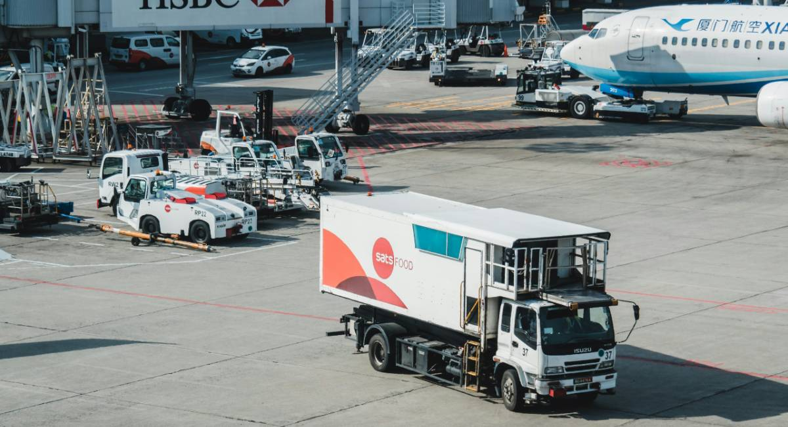

our customer experience
At Ensign Logistics, we are dedicated to providing top-tier logistics and transportation solutions that ensure efficiency, reliability, and customer satisfaction. With years of industry experience, we have built a reputation for excellence in freight shipping, warehousing, express delivery, and air freight services.
Our mission is to simplify logistics by offering seamless, cost-effective, and timely transportation solutions tailored to the unique needs of businesses and individuals. Whether it’s moving bulk goods across the country, managing secure storage, or ensuring urgent deliveries reach their destination on time, we are committed to delivering with precision and professionalism.
What sets us apart is our commitment to innovation, customer service, and operational excellence. We leverage cutting-edge technology and a well-connected global network to optimize supply chains, minimize delays, and enhance efficiency. Our team of logistics experts works around the clock to ensure your goods are handled with care and delivered safely..
OUR HISTORY
Ensign Logistics was founded in 1990 by Mr. Wisdom Samuel with a vision to revolutionize the logistics and transportation industry. What started as a small freight forwarding company has grown into a trusted name in global logistics, providing top-tier shipping, warehousing, and distribution services.
From the beginning, our goal has been to offer efficient, reliable, and customer-focused logistics solutions. With a commitment to excellence and innovation, we expanded our services to include freight shipping, warehousing & distribution, express delivery, and air freight. Over the years, we have built a strong network of partners, advanced our technology, and continuously improved our processes to meet the evolving needs of businesses and individuals worldwide.
Today, Ensign Logistics stands as a leader in the industry, trusted by businesses of all sizes for seamless supply chain solutions. Our journey from a local shipping service to a globally recognized logistics provider is a testament to our dedication, expertise, and unwavering commitment to customer satisfaction.